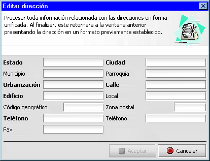

Nuevo registro
Los diálogos de entrada que se presentan luego de presionar Nuevo permiten adicionar una nueva entrada a la lista de valores. Los campos cuyas etiquetas se encuentran en negrita son campos de entrada obligatoria; por lo tanto la aplicación espera que el usuario de valores a dichos campos para así poder habilitar el botón Aceptar.
Editar un registro
Editar permite la edición de los valores de un registro previamente seleccionado haciendo clic en algún elemento de la lista. Para ello, presenta los datos en un dialogo de entrada igual al presentado por la acción Nuevo pero con los campos clave inhabilitados (campo que no puede ser modificado debido que es usado internamente por la aplicación para identificar de manera exclusiva este registro). Modifique los valores dentro de los componentes de entrada y presione Aceptar para actualizar los cambios. Presione Cancelar para finalizar sin actualizar ningún cambio.
Presionando Aceptar la aplicación adiciona esta nueva entrada a la lista. Si presiona Cancelar no se añade el registro.
Supresión de registro
La acción Suprimir Elimina el registro seleccionado de la lista. Debido a que esta es una operación destructiva, antes de la eliminación se presenta un mensaje solicitando la confirmación por parte del usuario para proseguir. Si el usuario indica Si, suprimir, la aplicación elimina este registro y sus registros relacionados. Por Ej.: si desea borrar una cuenta contable, al presionar si, la aplicación elimina dicha cuenta y las relaciones que se hayan establecido entre ella y las secciones dentro de una forma. Presionando NO, CANCELAR, no se suprime el registro.
Nota
En la lista donde se presentan las secciones, en la opción Contabilidad/Clio, solo se puede seleccionar un elemento (asociación) para suprimir. Si desea suprimir varias, debe hacerlo una por una.
Importar
Permite incorporar datos externos a la aplicación. Para que esto sea posible, generalmente estos presentan un asistente. Un asistente es un conjunto de ventana que son presentadas en secuencia y con instrucciones precisas que indican al usuario los pasos necesarios que permiten a la aplicación recopilar suficiente información para cumplir con éxito la operación. Importar básicamente es dar a la aplicación información para que esta pueda convertir datos al formato necesario para poder ser útil dentro de este programa.
Editor de direcciones
El editor de direcciones es un dialogo de entrada que permite una entrada unificada para todos los datos relacionados con direcciones. Este se encuentra en la ventana que aparece al presionar Nuevo o Edición de contribuyente. Para invocarlo, presione el botón y aparecerá

Este dialogo de entrada desglosa los elementos que conforman una dirección y le permite introducirlos en forma separada. Note que algunos de ellos son de entrada obligatoria. Una vez aceptado los cambios, este devuelve el control a la ventana anterior donde se puede ver que aparece una dirección con un formato ya preestablecido.